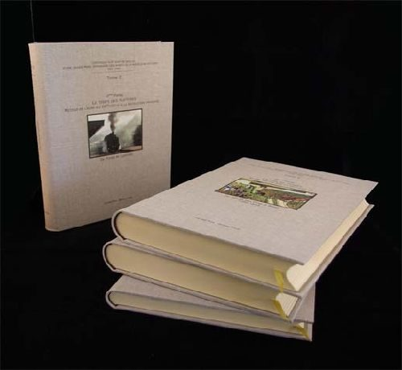

Reliure et restauration
Restauration de livres, corps d'ouvrage et couverture.
- Renforcement du dos, débrochage, nettoyage
- Restauration simple du papier, couture, collage
- Couverture : d'origine, scannée et imprimée sur toile, ou entièrement créée
- Remplacement des pages de garde
- Boîtes de conservation